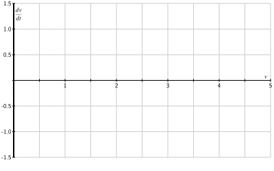
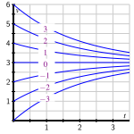

Section7.1An Introduction to Differential Equations
Motivating Questions
What is a differential equation and what kinds of information can it tell us?
How do differential equations arise in the world around us?
What do we mean by a solution to a differential equation?
In previous chapters, we have seen that a function’s derivative tells us the rate at which the function is changing. The Fundamental Theorem of Calculus helped us determine the total change of a function over an interval from the function’s rate of change. For instance, an object’s velocity tells us the rate of change of that object’s position. By integrating the velocity over a time interval, we can determine how much the position changes over that time interval. If we know where the object is at the beginning of that interval, we have enough information to predict where it will be at the end of the interval.
In this chapter, we introduce the concept of differential equations. A differential equation is an equation that provides a description of a function’s derivative, which means that it tells us the function’s rate of change. Using this information, we would like to learn as much as possible about the function itself. Ideally we would like to have an algebraic description of the function. As we’ll see, this may be too much to ask in some situations, but we will still be able to make accurate approximations.
Preview Activity7.1.1.
The position of a moving object is given by the function \(s(t)\text{,}\) where \(s\) is measured in feet and \(t\) in seconds. We determine that the velocity is \(v(t) = 4t + 1\) feet per second.
How much does the position change over the time interval \([0,4]\text{?}\)
Does this give you enough information to determine \(s(4)\text{,}\) the position at time \(t=4\text{?}\) If so, what is \(s(4)\text{?}\) If not, what additional information would you need to know to determine \(s(4)\text{?}\)
Suppose you are told that the object’s initial position \(s(0) = 7\text{.}\) Determine \(s(2)\text{,}\) the object’s position 2 seconds later.
If you are told instead that the object’s initial position is \(s(0) = 3\text{,}\) what is \(s(2)\text{?}\)
If we only know the velocity \(v(t)=4t+1\text{,}\) is it possible that the object’s position at all times is \(s(t) = 2t^2 + t - 4\text{?}\) Explain how you know.
Are there other possibilities for \(s(t)\text{?}\) If so, what are they?
If, in addition to knowing the velocity function is \(v(t) = 4t+1\text{,}\) we know the initial position \(s(0)\text{,}\) how many possibilities are there for \(s(t)\text{?}\)
Subsection7.1.1What is a differential equation?
A differential equation is an equation that describes the derivative, or derivatives, of a function that is unknown to us. For instance, the equation
\begin{equation*}
\frac{dy}{dx} = x\sin x
\end{equation*}
describes the derivative of a function \(y(x)\) that is unknown to us.
As many important examples of differential equations involve quantities that change in time, the independent variable in our discussion will frequently be time \(t\text{.}\) In the preview activity, we considered the differential equation
Knowing the velocity and the starting position of a moving object, we were able to find its position at any later time.
Because differential equations describe the derivative of a function, they give us information about how that function changes. Our goal will be to use this information to predict the value of the function in the future; in this way, differential equations provide us with something like a crystal ball.
Differential equations arise frequently in our every day world. For instance, you may hear a bank advertising:
Your money will grow at a 3% annual interest rate with us.
This innocuous statement is really a differential equation. Let’s translate: \(A(t)\) will be amount of money you have in your account at time \(t\text{.}\) The rate at which your money grows is the derivative \(dA/dt\text{,}\) and we are told that this rate is \(0.03 A\text{.}\) This leads to the differential equation
This differential equation has a slightly different feel than the previous equation \(\frac{ds}{dt} = 4t+1\text{.}\) In the earlier example, the rate of change depends only on the independent variable \(t\text{,}\) and we may find \(s(t)\) by integrating the velocity \(4t+1\text{.}\) In the banking example, however, the rate of change depends on the dependent variable \(A\text{,}\) so we’ll need some new techniques in order to find \(A(t)\text{.}\)
Activity7.1.2.
Express the following statements as differential equations. In each case, you will need to introduce notation to describe the important quantities in the statement so be sure to clearly state what your notation means.
The population of a town grows continuously at an annual rate of 1.25%.
A radioactive sample loses mass at a rate of 5.6% of its mass every day.
You have a bank account that continuously earns 4% interest every year. At the same time, you withdraw money continually from the account at the rate of $1000 per year.
A cup of hot chocolate is sitting in a 70\(^\circ\) room. The temperature of the hot chocolate cools continuously by 10% of the difference between the hot chocolate’s temperature and the room temperature every minute.
A can of cold soda is sitting in a 70\(^\circ\) room. The temperature of the soda warms continuously at the rate of 10% of the difference between the soda’s temperature and the room’s temperature every minute.
Subsection7.1.2Differential equations in the world around us
Differential equations give a natural way to describe phenomena we see in the real world. For instance, physical principles are frequently expressed as a description of how a quantity changes. A good example is Newton’s Second Law, which says:
The product of an object’s mass and acceleration equals the force applied to it.
For instance, when gravity acts on an object near the earth’s surface, it exerts a force equal to \(mg\text{,}\) the mass of the object times the gravitational constant \(g\text{.}\) We therefore have
where \(v\) is the velocity of the object, and \(g = 9.8\) meters per second squared. Notice that this physical principle does not tell us what the object’s velocity is, but rather how the object’s velocity changes.
Activity7.1.3.
Shown below are two graphs depicting the velocity of falling objects. On the left is the velocity of a skydiver, while on the right is the velocity of a meteorite entering the Earth’s atmosphere.
Figure7.1.1.A skydiver’s velocity.
Figure7.1.2.A meteorite’s velocity.
Begin with the skydiver’s velocity and use the given graph to measure the rate of change \(dv/dt\) when the velocity is \(v=0.5, 1.0, 1.5, 2.0\text{,}\) and \(2.5\text{.}\) Plot your values on the graph below. You will want to think carefully about this: you are plotting the derivative \(dv/dt\) as a function of velocity.

Now do the same thing with the meteorite’s velocity: use the given graph to measure the rate of change \(dv/dt\) when the velocity is \(v=3.5,4.0,4.5\text{,}\) and \(5.0\text{.}\) Plot your values on the graph above.
You should find that all your points lie on a line. Write the equation of this line being careful to use proper notation for the quantities on the horizontal and vertical axes.
The relationship you just found is a differential equation. Write a complete sentence that explains its meaning.
By looking at the differential equation, determine the values of the velocity for which the velocity increases.
By looking at the differential equation, determine the values of the velocity for which the velocity decreases.
By looking at the differential equation, determine the values of the velocity for which the velocity remains constant.
The point of this activity is to demonstrate how differential equations model processes in the real world. In this example, two factors influence the velocities: gravity and wind resistance. The differential equation describes how these factors influence the rate of change of the velocities.
Subsection7.1.3Solving a differential equation
A differential equation describes the derivative, or derivatives, of a function that is unknown to us. By a solution to a differential equation, we mean simply a function that satisfies this description.
For instance, the first differential equation we looked at is
which describes an unknown function \(s(t)\text{.}\) We may check that \(s(t) =
2t^2+t\) is a solution because it satisfies this description. Notice that \(s(t) = 2t^2+t+4\) is also a solution.
If we have a candidate for a solution, it is straightforward to check whether it is a solution or not. Before we demonstrate, however, let’s consider the same issue in a simpler context. Suppose we are given the equation \(2x^2 - 2x = 2x+6\) and asked whether \(x=3\) is a solution. To answer this question, we could rewrite the variable \(x\) in the equation with the symbol \(\Box\text{:}\)
To determine whether \(x=3\) is a solution, we can investigate the value of each side of the equation separately when the value \(3\) is placed in \(\Box\) and see if indeed the two resulting values are equal. Doing so, we observe that
Since \(\frac{dv}{dt}\) and \(1.5 - 0.5v\) agree for all values of \(t\) when \(v = 3-2e^{-0.5t}\text{,}\) we have indeed found a solution to the differential equation.
Which of the following functions are solutions of this differential equation?
\(v(t) = 1.5t - 0.25t^2\text{.}\)
\(v(t) = 3 + 2e^{-0.5t}\text{.}\)
\(v(t) = 3\text{.}\)
\(v(t) = 3 + Ce^{-0.5t}\) where \(C\) is any constant.
This activity shows us something interesting. Notice that the differential equation has infinitely many solutions, which are parametrized by the constant \(C\) in \(v(t) = 3+Ce^{-0.5t}\text{.}\) In Figure 7.1.3, we see the graphs of these solutions for a few values of \(C\text{,}\) as labeled.

Figure7.1.3.The family of solutions to the differential equation \(\frac{dv}{dt} = 1.5 - 0.5v\text{.}\)
Notice that the value of \(C\) is connected to the initial value of the velocity \(v(0)\text{,}\) since \(v(0) = 3+C\text{.}\) In other words, while the differential equation describes how the velocity changes as a function of the velocity itself, this is not enough information to determine the velocity uniquely: we also need to know the initial velocity. For this reason, differential equations will typically have infinitely many solutions, one corresponding to each initial value. We have seen this phenomenon before: given the velocity of a moving object \(v(t)\text{,}\) we cannot uniquely determine the object’s position function unless we also know its initial position.
If we are given a differential equation and an initial value for the unknown function, we say that we have an initial value problem. For instance,
is an initial value problem. In this problem, we know the value of \(v\) at one time and we know how \(v\) is changing. Consequently, there should be exactly one function \(v\) that satisfies the initial value problem.
This demonstrates the following important general property of initial value problems.
Initial value problems that are “well behaved” have exactly one solution, which exists in some interval around the initial point.
We won’t worry about what “well behaved” means—it is a technical condition that will be satisfied by all the differential equations we consider.
To close this section, we note that differential equations may be classified based on certain characteristics they may possess. You may see many different types of differential equations in a later course in differential equations. For now, we would like to introduce a few terms that are used to describe differential equations.
A first-order differential equation is one in which only the first derivative of the function occurs. For this reason,
A differential equation is simply an equation that describes the derivative(s) of an unknown function.
Physical principles, as well as some everyday situations, often describe how a quantity changes, which lead to differential equations.
A solution to a differential equation is a function whose derivatives satisfy the equation’s description. Differential equations typically have infinitely many solutions, parametrized by the initial values.
Exercises7.1.5Exercises
1.Matching solutions with equations.
The top and bottom margins of a poster are 4 cm and the side margins are each 2 cm. If the area of printed material on the poster is fixed at 384 square centimeters, find the dimensions of the poster with the smallest area.
If 1300 square centimeters of material is available to make a box with a square base and an open top, find the largest possible volume of the box.
Volume = cm\(^3\)
3.Choosing solution of \(dy/dt=k(1-Ay)\).
A piece of wire 35 m long is cut into two pieces. One piece is bent into a square and the other is bent into a circle.
(a) How much of the wire should go to the square to maximize the total area enclosed by both figures?
m
(b) How much of the wire should go to the square to minimize the total area enclosed by both figures?
m
4.
Suppose that \(T(t)\) represents the temperature of a cup of coffee set out in a room, where \(T\) is expressed in degrees Fahrenheit and \(t\) in minutes. A physical principle known as Newton’s Law of Cooling tells us that
Supposes that \(T(0)=105\text{.}\) What does the differential equation give us for the value of \(\frac{dT}{dt}\vert_{T=105}\text{?}\) Explain in a complete sentence the meaning of these two facts.
Is \(T\) increasing or decreasing at \(t=0\text{?}\)
What is the approximate temperature at \(t=1\text{?}\)
On the graph below, make a plot of \(dT/dt\) as a function of \(T\text{.}\)
For which values of \(T\) does \(T\) increase? For which values of \(T\) does \(T\) decrease?
What do you think is the temperature of the room? Explain your thinking.
Verify that \(T(t) = 75 + 30e^{-t/15}\) is the solution to the differential equation with initial value \(T(0) = 105\text{.}\) What happens to this solution after a long time?
5.
Suppose that the population of a particular species is described by the function \(P(t)\text{,}\) where \(P\) is expressed in millions. Suppose further that the population’s rate of change is governed by the differential equation
where \(k\) is the spring constant, a constant that depends on the properties of the spring in the scale. After you put the bananas in the scale, you (cleverly) observe that the height of the bananas is given by \(h(t) = 4\sin(3t)\text{.}\) What is the value of the spring constant?